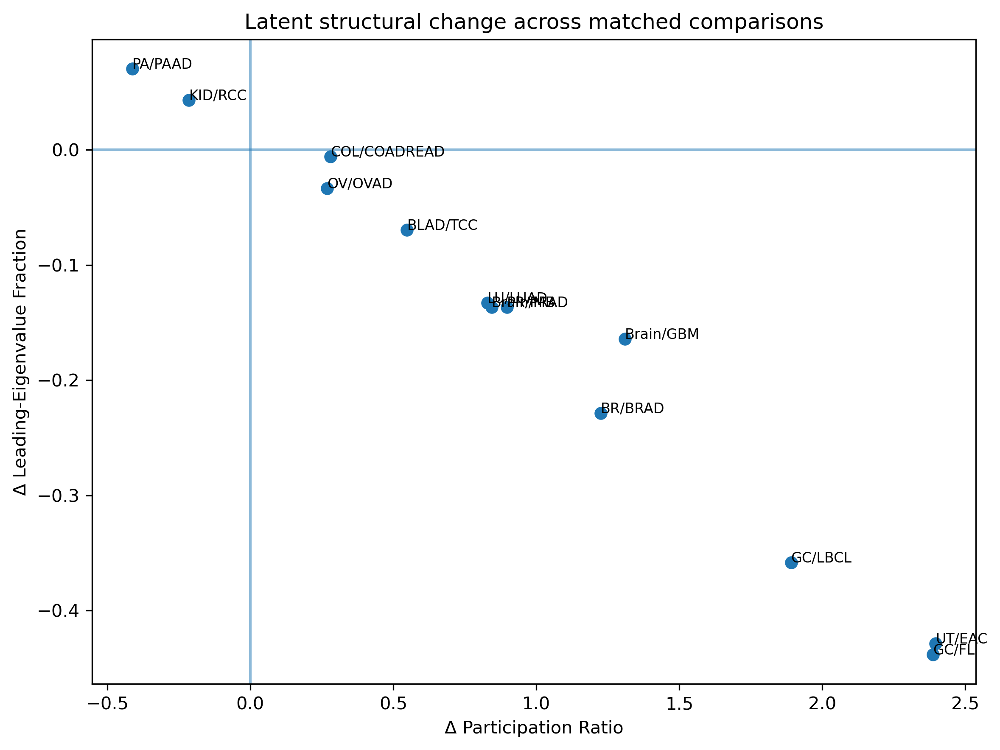

| comparison | n_normal | n_tumor | pr_normal | pr_tumor | pr_delta | eig_entropy_normal | eig_entropy_tumor | eig_entropy_delta | anisotropy_normal | anisotropy_tumor | anisotropy_delta | radius_normal | radius_tumor | radius_delta | centroid_distance |
|---|---|---|---|---|---|---|---|---|---|---|---|---|---|---|---|
| BLAD/TCC | 7.000 | 11.000 | 2.868 | 3.416 | 0.548 | 1.210 | 1.430 | 0.220 | 0.485 | 0.416 | −0.070 | 20.937 | 20.135 | −0.801 | 37.080 |
| BR/BRAD | 5.000 | 11.000 | 1.654 | 2.879 | 1.225 | 0.655 | 1.319 | 0.664 | 0.740 | 0.512 | −0.229 | 25.817 | 30.179 | 4.361 | 35.518 |
| Brain/GBM | 8.000 | 10.000 | 2.592 | 3.902 | 1.310 | 1.141 | 1.579 | 0.438 | 0.540 | 0.376 | −0.164 | 17.915 | 22.013 | 4.098 | 26.573 |
| Brain/MB | 8.000 | 10.000 | 2.592 | 3.435 | 0.844 | 1.141 | 1.428 | 0.288 | 0.540 | 0.403 | −0.137 | 17.915 | 19.155 | 1.240 | 33.631 |
| COL/COADREAD | 11.000 | 11.000 | 2.534 | 2.815 | 0.280 | 1.152 | 1.353 | 0.201 | 0.546 | 0.541 | −0.006 | 19.358 | 27.708 | 8.350 | 25.238 |
| GC/FL | 6.000 | 11.000 | 1.385 | 3.772 | 2.387 | 0.554 | 1.537 | 0.983 | 0.840 | 0.402 | −0.438 | 17.688 | 17.191 | −0.497 | 28.671 |
| GC/LBCL | 6.000 | 11.000 | 1.385 | 3.276 | 1.891 | 0.554 | 1.464 | 0.910 | 0.840 | 0.482 | −0.359 | 17.688 | 12.687 | −5.001 | 26.278 |
| KID/RCC | 12.000 | 11.000 | 3.348 | 3.133 | −0.214 | 1.422 | 1.356 | −0.065 | 0.407 | 0.450 | 0.043 | 16.744 | 27.882 | 11.138 | 17.164 |
| LU/LUAD | 7.000 | 11.000 | 1.931 | 2.761 | 0.830 | 0.884 | 1.319 | 0.435 | 0.677 | 0.544 | −0.133 | 21.418 | 25.737 | 4.319 | 15.244 |
| OV/OVAD | 4.000 | 11.000 | 2.162 | 2.431 | 0.269 | 0.906 | 1.199 | 0.293 | 0.614 | 0.581 | −0.034 | 14.985 | 25.331 | 10.347 | 25.847 |
| PA/PAAD | 10.000 | 10.000 | 2.796 | 2.384 | −0.413 | 1.302 | 1.217 | −0.086 | 0.537 | 0.607 | 0.070 | 21.426 | 23.132 | 1.706 | 24.021 |
| PR/PRAD | 9.000 | 10.000 | 2.858 | 3.756 | 0.898 | 1.285 | 1.469 | 0.184 | 0.516 | 0.380 | −0.136 | 15.971 | 21.765 | 5.794 | 12.517 |
| UT/EAC | 6.000 | 10.000 | 1.407 | 3.804 | 2.397 | 0.584 | 1.532 | 0.948 | 0.834 | 0.406 | −0.429 | 23.443 | 28.415 | 4.972 | 26.499 |
26 Latent-Space Complexity: Within-Class Geometric Analysis
27 Purpose
This section applies the latent-space geometric framework defined in the Methods section to quantify within-class structure across cancer types.
Specifically, we evaluate how the geometric properties of latent representations differ between normal and tumor samples for each tissue.
All metrics used in this section—participation ratio, eigenvalue entropy, anisotropy, class radius, centroid distance, and neighborhood structure—are defined formally in the preceding Methods section.
The present analysis does not introduce new measures; it applies those definitions to compute per-cancer geometric differences.
28 Analytical Scope
This section focuses on within-class structure, evaluating how the internal geometry of each class changes from normal to tumor.
Between-class relationships (e.g., global geometry across cancer types) are addressed separately.
29 Data Inputs
The analysis operates on the aligned latent dataset:
- latent coordinates (
latent.npy) - metadata (
metadata_aligned.csv)
Each sample is represented as a latent vector ( z_i ^k ), with associated labels for condition (normal vs tumor) and cancer type.
30 Computational Strategy
For each cancer type ( t ):
- Partition samples into:
- normal: ( X_t^{(N)} )
- tumor: ( X_t^{(T)} )
- Compute geometric measures for each group:
- participation ratio (PR)
- eigenvalue entropy (H)
- anisotropy (A)
- class radius (R)
- Compute differences:
[ M_t = M_t^{(T)} - M_t^{(N)} ]
These deltas constitute the primary outputs of this section.
31 Interpretation Framework
The quantities computed in this section describe geometric properties of the latent representation, not direct biological observables.
Interpretation follows these rules:
- Higher participation ratio or entropy indicates variance distributed across more latent dimensions.
- Higher radius indicates greater dispersion of samples within a class.
- Higher anisotropy indicates stronger directional structure.
- These measures do not directly imply biological complexity gain or loss.
Comparison with classical expression-space complexity measures is deferred to the integrated results section.
32 Within-Class Latent Geometry
32.1 Overview
32.2 Overview
This section evaluates how the internal geometric structure of each cancer class changes between normal and tumor states using the metrics defined in the Methods chapter.
For each cancer type, samples are partitioned into normal and tumor groups, and geometric measures are computed separately for each group. Differences between these groups quantify how the geometric structure of the latent representation changes under tumorigenesis.
The results are presented in aggregated form, combining multiple geometric measures into summary tables, structural visualizations, and ranked comparisons.
The metrics summarized in this section quantify complementary aspects of latent geometry:
- Participation ratio and eigenvalue entropy reflect effective dimensionality.
- Anisotropy captures directional concentration of variance.
- Radius measures overall dispersion of samples within a class.
- Centroid distance reflects global separation between normal and tumor states.
The results shown below summarize geometric properties for normal and tumor groups, together with the corresponding tumor-minus-normal differences for each cancer type.
32.3 Comparison Metrics Table
This table provides the primary quantitative summary of within-class latent geometry across matched normal–tumor comparisons.
32.4 Structural-Change Space
The figure below places each matched comparison in a latent structural-change plane defined by the change in participation ratio (effective dimensionality) and the change in anisotropy (directional concentration of variance).

32.5 Ranked Summaries
To facilitate comparison across cancer types, selected metrics are ranked according to the magnitude of change between normal and tumor states.
These rankings provide a compact view of the most pronounced geometric shifts in latent space.
32.5.1 Largest decreases in participation ratio (ΔPR)
| comparison | pr_delta | anisotropy_delta | eig_entropy_delta | radius_delta |
|---|---|---|---|---|
| PA/PAAD | -0.413 | 0.070 | -0.086 | 1.706 |
| KID/RCC | -0.214 | 0.043 | -0.065 | 11.138 |
| OV/OVAD | 0.269 | -0.034 | 0.293 | 10.347 |
| COL/COADREAD | 0.280 | -0.006 | 0.201 | 8.350 |
| BLAD/TCC | 0.548 | -0.070 | 0.220 | -0.801 |
| LU/LUAD | 0.830 | -0.133 | 0.435 | 4.319 |
| Brain/MB | 0.844 | -0.137 | 0.288 | 1.240 |
| PR/PRAD | 0.898 | -0.136 | 0.184 | 5.794 |
| BR/BRAD | 1.225 | -0.229 | 0.664 | 4.361 |
| Brain/GBM | 1.310 | -0.164 | 0.438 | 4.098 |
32.5.2 Largest increases in participation ratio (ΔPR)
| comparison | pr_delta | anisotropy_delta | eig_entropy_delta | radius_delta |
|---|---|---|---|---|
| UT/EAC | 2.397 | -0.429 | 0.948 | 4.972 |
| GC/FL | 2.387 | -0.438 | 0.983 | -0.497 |
| GC/LBCL | 1.891 | -0.359 | 0.910 | -5.001 |
| Brain/GBM | 1.310 | -0.164 | 0.438 | 4.098 |
| BR/BRAD | 1.225 | -0.229 | 0.664 | 4.361 |
| PR/PRAD | 0.898 | -0.136 | 0.184 | 5.794 |
| Brain/MB | 0.844 | -0.137 | 0.288 | 1.240 |
| LU/LUAD | 0.830 | -0.133 | 0.435 | 4.319 |
| BLAD/TCC | 0.548 | -0.070 | 0.220 | -0.801 |
| COL/COADREAD | 0.280 | -0.006 | 0.201 | 8.350 |
32.5.3 Largest centroid shifts (distance)
| comparison | centroid_distance | pr_delta | eig_entropy_delta | anisotropy_delta |
|---|---|---|---|---|
| BLAD/TCC | 37.080 | 0.548 | 0.220 | -0.070 |
| BR/BRAD | 35.518 | 1.225 | 0.664 | -0.229 |
| Brain/MB | 33.631 | 0.844 | 0.288 | -0.137 |
| GC/FL | 28.671 | 2.387 | 0.983 | -0.438 |
| Brain/GBM | 26.573 | 1.310 | 0.438 | -0.164 |
| UT/EAC | 26.499 | 2.397 | 0.948 | -0.429 |
| GC/LBCL | 26.278 | 1.891 | 0.910 | -0.359 |
| OV/OVAD | 25.847 | 0.269 | 0.293 | -0.034 |
| COL/COADREAD | 25.238 | 0.280 | 0.201 | -0.006 |
| PA/PAAD | 24.021 | -0.413 | -0.086 | 0.070 |
33 Summary
This section computes within-class geometric differences between normal and tumor samples in latent space.
The results provide a structured description of:
- dimensionality (PR, entropy)
- dispersion (radius)
- directional structure (anisotropy)
- local organization (neighborhood metrics)
These quantities form the basis for cross-representation comparison with classical complexity measures.
They also serve as inputs for subsequent analysis of between-class geometry and integrated biological interpretation.
33.1 Notes
These results are descriptive summaries of latent-space geometry and should not be interpreted as direct measures of biological complexity.
Interpretation should be integrated with the broader comparison framework, including classical complexity measures and pathway-level biological context.